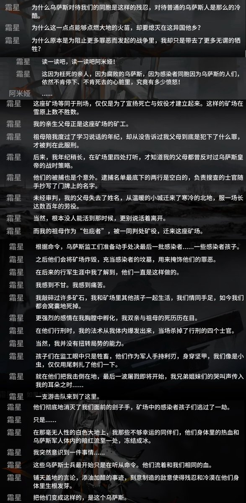

The Raven in the Rain🏳️🌈
@Raincandy_1937
RT @PelerinInExile: 参加俄军填线的傻逼假霜星厨鹅杂看过方舟剧情吗，不知道以大鹅为原型的乌萨斯是有多不当人所以霜星才加入整合运动反抗乌萨斯的吗😅
要是真喜欢霜星、想加入改变“乌萨斯”的“整合运动”的话，还是加入俄罗斯自由军吧😅 …

夜鹭酱ゴイサギちゃん🇺🇦
@PelerinInExile
参加俄军填线的傻逼假霜星厨鹅杂看过方舟剧情吗，不知道以大鹅为原型的乌萨斯是有多不当人所以霜星才加入整合运动反抗乌萨斯的吗😅
要是真喜欢霜星、想加入改变“乌萨斯”的“整合运动”的话，还是加入俄罗斯自由军吧😅 https://t.co/5Q0VUppGtv https://t.co/Sk7e2nHgIh